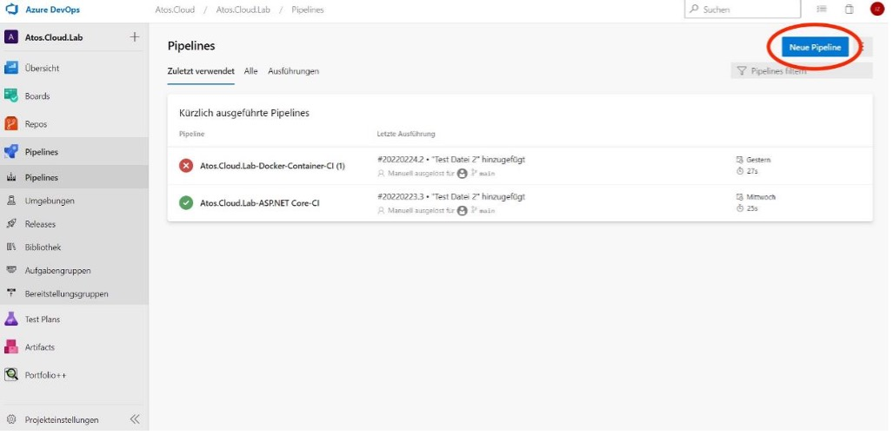
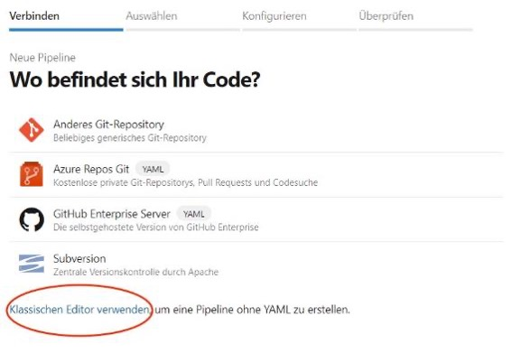
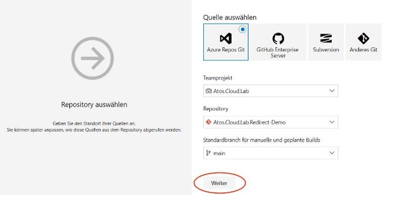
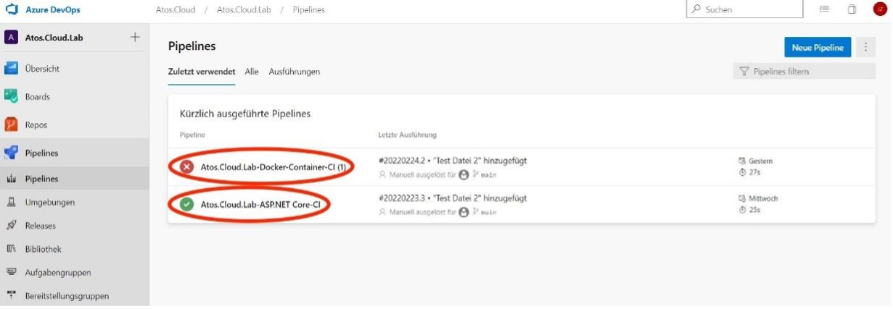
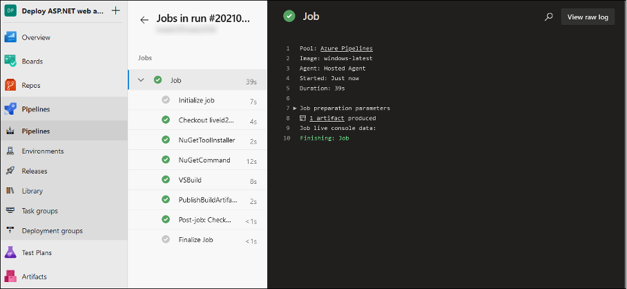
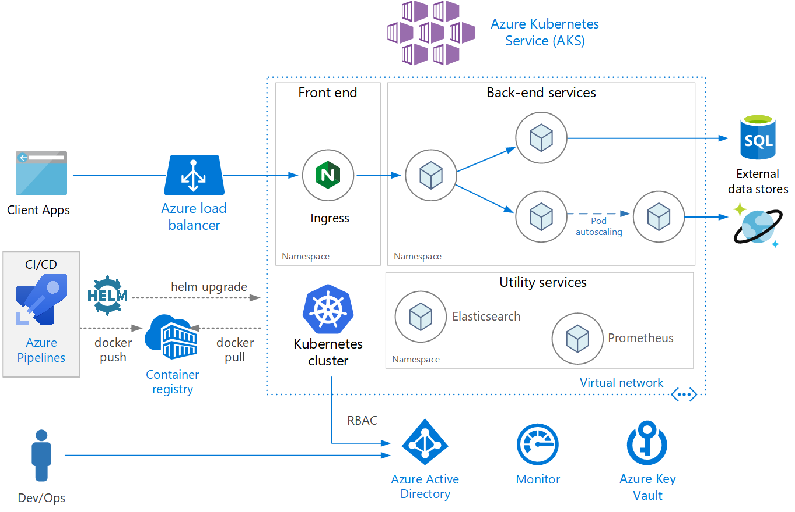

Schwerpunktthema - ASP:NET - Continous Deployment via DevOps Pipelines
Webapps statt normaler Software?
Wir wissen dank dieser Vorlesung bereits was WebApps sind. Denoch sollen hier noch einmal ihre Vorteile erläutert sein: Sie funktionieren auf allen Betriebssystemen und internetfähigen bzw. mit einem Webbrowser ausgestatteten Endgeräten Sie haben eine effiziente und im Vergleich zu Nativen Apps oft günstigere Programmierung Software-Upgrades sind einfacher, da sich der Entwickler nicht mit den verschiedenen Betriebssystemen seiner User beschäftigen muss.
Der Nachteil von Web-Apps ist natürlich, dass die Bereitstellung, Verarbeitung und Auswertung der Daten auf einem Webserver bzw. in der Cloud erfolgen muss. Für das Hosting und Simulieren von Servern wurden in der Vorlesung viele Beispiele genannt. Ein Beispiel war der selfhosted Tomcat Server.
Progressives Deployment
Was ist eigentlich das Problem mit ganz normalem Deployment?
Als wir in der fünften Vorlesung einen TomCat-Server gehostet haben sind wir schon in Kontakt mit der grundlegenden Idee von Deployment gekommen. Wir hatten einen "Enwticklungsumgebungsordner" und einen "DeploymentOrdner" Wollte man jetzt eine Änderung im Quellcode vornehmen (bzw. ein Update machen) so musste die Java-Datei kompiliert werden und die Class-Datei überkopiert werden. Bei diesem Schritt kam es oft zu Schwierigkeiten und auch wenn es nach ein paar Versuchen gut funktioniert hat, wird schnell klar, dass dies keine sichere, transparente und flexible Methode für international agierende Development Teams sein kann.Hiermit wird eine weitere Methode vorgestellt, die mittlerweile klassischerweise von vielen Development Teams eingesetzt wird. Diese versucht die Vorteile von 3 Haupttechnologien zu kombinieren:
- Flexible Cloud Repositorien
- Pipelines für continuous Deployment
- Skalierte Container
In unserem Beispiel nutzen wir das Azure DevOps Environment. Zur Simplifizierung wird die Möglichkeit der Container Nutzung nur in der Theorie erläutert; Außerdem bietet Azure DevOps eine simple und direkte Unterstützung für das Pushen von Windows ASP.NET-Apps an, welche ohne die Verwendung von Containern auskommt und direkt von MS.Azure Gehosted wird.
3 Komponenten
1: Flexible Cloud Repositorien
Ein Code-Repository ist ein Archiv des Codes selbst, an dem gearbeitet wird. Neben dem Code können auch Dinge wie Dokumentation, Notizen, Webseiten und andere Elemente in einem Repository aufbewahrt werden. Damit mehrere Teams gleichzeitig darauf zugreifen können bietet es sich selbstverständlich an, das Repository in der Cloud zu haben. Bekanntes Beispiel für ein solche Programme sind GitHub und GitLab. Aber Team-Entwicklungsumgebungen wie Azure-DevOps bieten auch integrierte Repos, welche wir im folgenden Beispiel nutzen werden.2. Pipelines für continuous Deployment
Eine Pipeline ist eine Reihe von automatisierten Prozessen, die es uns ermöglichen, Code zuverlässig zu kompilieren, zu erstellen und auf den Produktions-Rechenplattformen einzusetzen. Die allgemeine Architektur der Pipeline sollte aus folgenden Elementen bestehen: 1. Eine Build- und Testphase 2. Eine Freigabephase, in der die Anwendung in einer Staging-Umgebung freigegeben wird Der Code soll den Repositorien entnommen und in Containern deployed werden.3: Skalierte Container
Eine schnelle Bereitstellung ist der Schlüssel für Geschäftsflexibilität. Moderne Unternehmen müssen in der Lage sein, Apps schnell freizugeben, um im Geschäft zu bleiben und neue Kunden anzuziehen. Containerisierung spart Zeit und verringert Kosten. Sie müssen keine Hardware konfigurieren und Zeit damit verbringen, Betriebssysteme und Software zu installieren, um eine Bereitstellung zu hosten. Mehrere Apps können in isolierten Containern auf derselben Hardware (bzw. der Cloud) ausgeführt werden. Es ist möglich, eine schnelle horizontale Hochskalierung zu erreichen, indem weitere Containerinstanzen gestartet werden. Das Management der verschiedenen Container heißt übrigens Orchestriesierung:
Beispiel: DevOps Pipeline
Wir erstellen eine neue Pipeline:

Jetzt benötigen wir Zugriff auf das Repository: 
Hier können wir einen Code aus unserem Repository auswählen und das Deployment launchen. Ausgeführte Pipelines findet man unter Pipelines:
In meinem Beispiel habe ich es sowohl mit einem Docker Container als auch mit einer regulären ASP.NET-App versucht. Allerdings hat nur zweiteres funktioniert.
Die Ausführung der ASP.NET-App war erfolgreich. Die Pipeline dient jetzt als Plattform zum kontinuierlichen Deployment. Die ASP.net App kann man jetzt nach Belieben über VisualStudio anpassen und wenn der Code in das Repository commited wird, kann er automatisch von der Pipeline ausgeführt werden.Conclusion
Vorteile von ASP.NET
Auf Produktbasis es sicherlich sinnvoll auf ASP.NET zu setzen, da man durch die Nutzung von Werkzeugen wie Visual Studio, schneller entwickeln kann und dadurch Zeit und dadurch auch Kosten spart. Auch wenn es kurzfristig teurer in der Anschaffung ist.Nachteile von ASP.NET
Allerdings kommt diese Performance zu einem Preis: ASP.NET benötigt weitaus mehr Webserver-Ressourcen als PHP oder andere Sprachen, so dass es entweder bessere Server oder eine größere Anzahl von ihnen benötigt. Bei einer extrem hohen Nachfrage und Auslastung (wie sie z.B. Unternehmen wie Facebook, Google erleben) würden Kosten möglicherweise exponentiell steigen.
Docker als Lösung
Hierbei könnte eine orchestrierte "Landschaft" von Docker-Containern eine kostengünstigere, effizientere Alternative bieten.
Diese Container können sowohl Programm-Code, als auch Datenbanken und Server-Applikationen enthalten.
In der Theorie funktioniert der Deployment-Ablauf über die Pipeline in die Azure-Cloud genau wie in dem gegebenen Beispiel, nur dass die ausführende Agent-Software entsprechend mit Docker Plugins konfiguriert werden muss.
Falls mehr Interesse besteht, kann man sich hier über Konfiguration und Ausführung von Docker über eine Pipeline informieren.